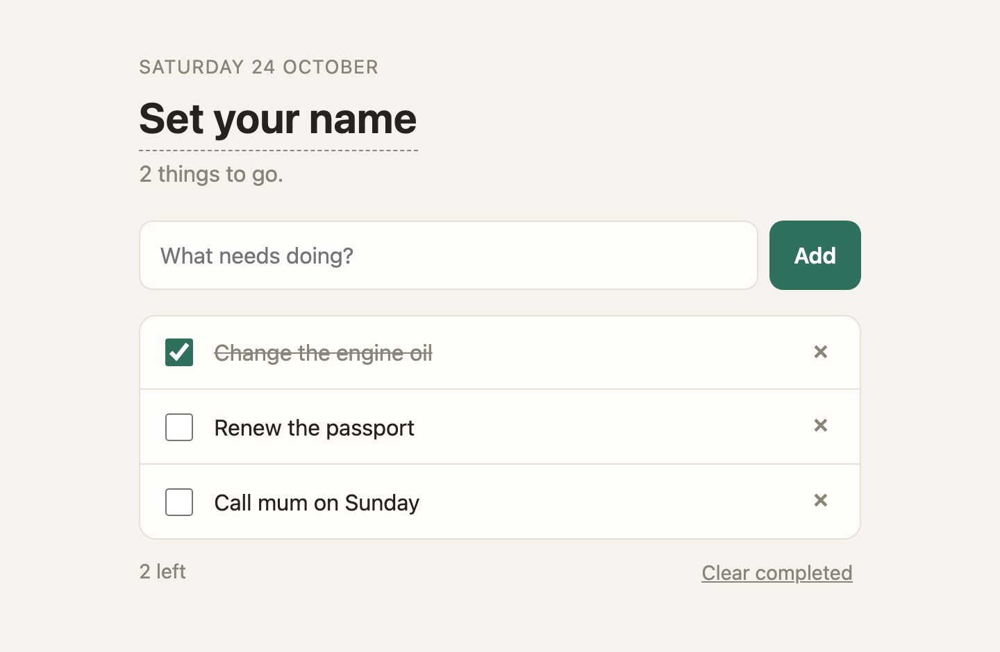
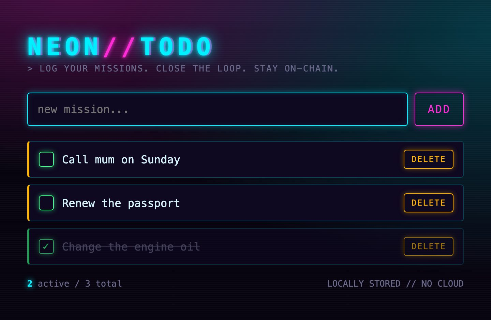
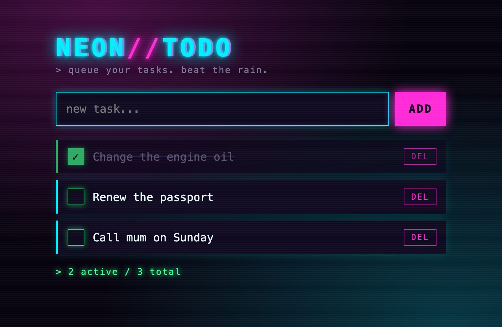
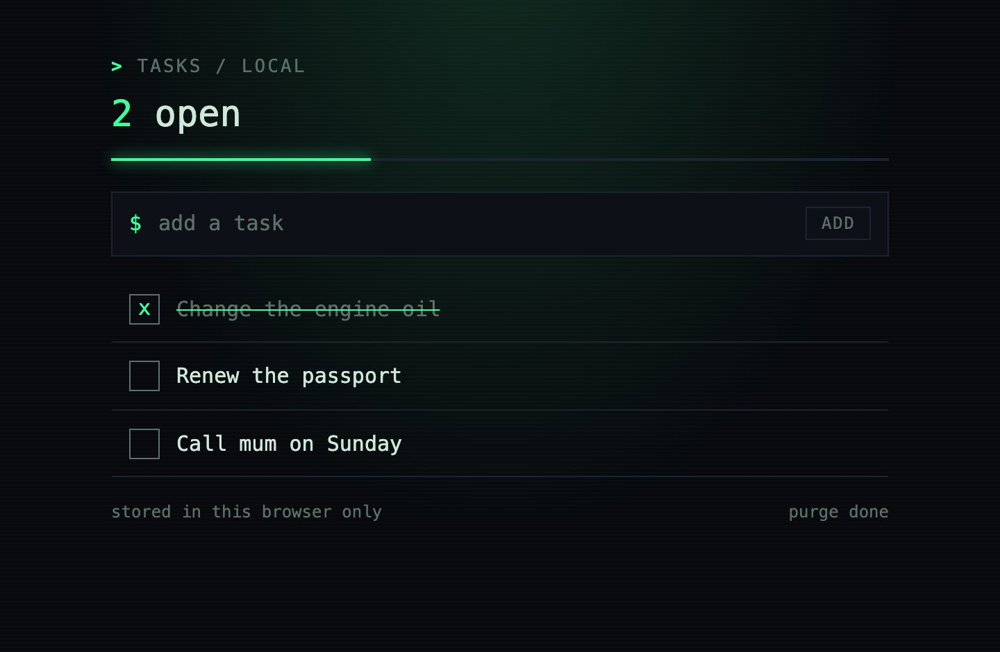
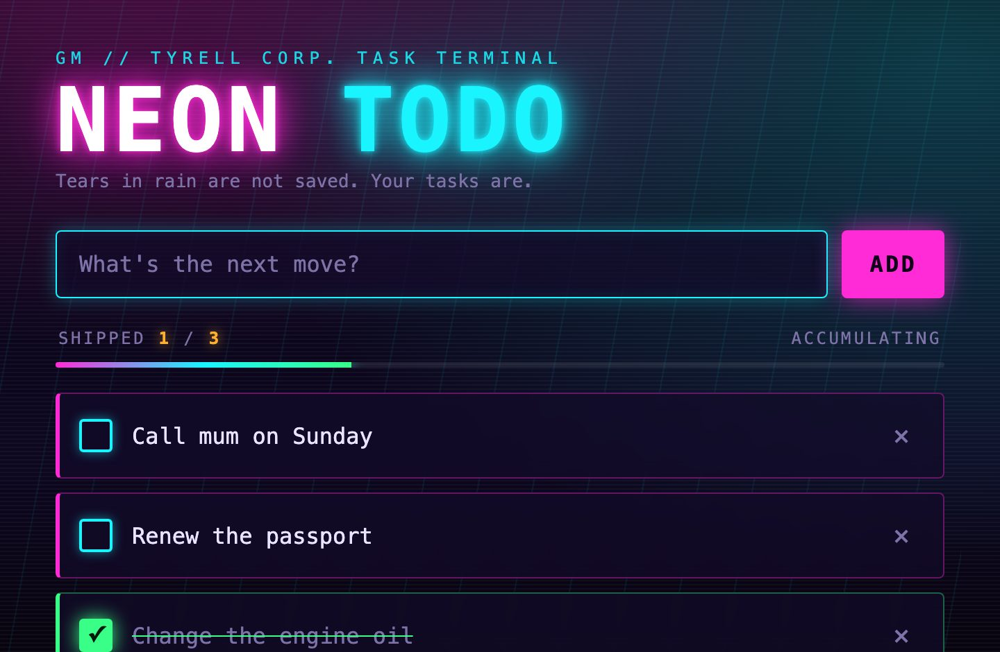

chaos-kb is a personal knowledge base for agents. You write ordinary Markdown notes about yourself. Your agent checks them for what is already known about you and finds what it needs by meaning. Everything runs on your own machine.
Notes
plain .md files you can open in Obsidian
Check
the same words are found by fingerprint, no model needed
Search
by meaning, with a local model through Ollama
Connect
MCP for Claude Code, Codex and Tengu
VAULT / TASTE.MD
## Websites
I love Blade Runner, so I like websites in its style: shiny neon.
I like the crypto degen style.
REMEMBERED
01 / EXERCISE · TENGU CLUSTER
One request, two agents
Two agents got the same task: build a simple to-do list website. They share the model, the instructions and the file tools. One thing differs: the second can read a knowledge base about the user.
1
Remember
A third agent, the scribe, got two facts and stored them with kb_remember, one per call, after kb_check showed they were not there yet. Nothing else is in the knowledge base:
## WebsitesI love Blade Runner, so I like websites in its style: shiny neon.I like the crypto degen style.
2
Ask
Both builders got the same request at the same moment:
Build me a simple to-do list website: one file, index.html, in your working directory, with the CSS and JavaScript inside it and nothing loaded from the internet. I want to add tasks, mark them done, delete them, and still have them after a reload. Make it feel like it was made for me.
When you are done, reply in two lines: what the page does, and what you based its look on.
3
Compare
We opened both sites in a browser, added the same three tasks and ticked the first. Here is what came back.
Without the knowledge baseplain

“I found no notes about you in this workspace, so I didn’t guess your tastes. The look is a warm, minimal paper-and-green style…”
With the knowledge basepersona
“I based the look on your Blade Runner taste (from your notes) and the crypto-degen style you like. It has a dark background, glowing cyan, pink and violet neon, scanlines, and a monospace font.”
What the agent asked the knowledge base
kb_searchuser's favorite colors, design style, and aesthetic preferences
The agent wrote the question itself. It contains neither “Blade Runner” nor “neon”: the note was found by similar meaning. Its second question, about who the user is, returned the same note with a score of 0.351.
The same again, two minutes later
Same outcome. The builder with the knowledge base made a neon “STAY ON-CHAIN” page in cyan, pink and amber on dark purple. The one without it chose a calm theme with a teal accent that follows the system’s light or dark setting.
plain

persona
Two runs on 24.10.2026, 26 and 35 seconds for both sites. This is a demonstration, not a benchmark. The builders are Claude Sonnet 5.5 through Claude Code in Tengu Cluster; the scribe is Claude Haiku 5.5. Vault root after the scribe: 59f41e6f5ce1579a70434a1c0c27fcfb021c4e420aac090b8b97a627063b775b. Tengu 9805470d751bc7fb18b4fa96153c1b095cdb73e6 · chaos-kb 2.0.0 · Claude Code 2.1.310.
02 / HOW IT WORKS
Words, fingerprints, meaning
chaos-kb keeps nothing but your notes and an index next to them. The index answers two questions: “is this already known?” and “what do my notes say about it?”
Notes .mdsync reads the folder
Same words
Blockparagraph, list item, table
FingerprintBLAKE3 of the words
Merkle treenotes → one root
check without the model
Same meaning
Chunkup to 1200 characters
Vectorembeddinggemma in Ollama
Indexone redb file
check and search by meaning
The vault
A folder of .md files is the only copy of your knowledge. chaos-kb writes to it only when you call remember, and never changes what is already written. The index lives in the .chaos-kb folder inside the vault: delete it and sync rebuilds it.
Fingerprints and the Merkle tree
Every paragraph, list item or table has a fingerprint: a BLAKE3 hash of its words. Markup, case and spacing are ignored, so Allergic to penicillin. and - **allergic** to PENICILLIN are one fact. Fingerprints roll up into a hash per note, and the note hashes into one root hash. If the root has not changed, nothing has.
Embeddings
An embedding is a list of numbers that describes what a text means. The embeddinggemma model computes one for every chunk and for the question. The closer two vectors are (cosine similarity), the closer the meaning. That is how a question in Russian finds a note written in English.
How check answers
Real chaos-kb answers on the vault from the exercise. Pick a question.
1Same words?look up the fingerprint
2Embed the questionone model call
3Similarity ≥ 0.38?against the nearest chunk
checki LIKE the **crypto degen** style
exactTaste.md › Websites · line 5
Same words; markup and case do not matter. No model call, answered in 0.04 s.
checkWhat kind of websites does the user like?
similarscore 0.645Taste.md › Websites · lines 3–5
Hardly a word from the note, yet the meaning matches. One model call, about 0.14 s.
checkКакие сайты мне нравятся?
similarscore 0.597Taste.md › Websites · lines 3–5
A question in Russian, a note in English: vectors compare meaning, not language.
checkWhat music do I listen to?
absentscore 0.320
Nothing about music is stored: the best chunk scored 0.320, below the 0.38 line. This is where the agent should ask you, and store your answer with remember.
Speed
Command
Time
First sync: embeds all 1004 chunks
12.6 s
sync with nothing changed
0.09 s
sync after editing one note
0.14 s
check, same words (no model)
0.04 s
check by meaning (one model call)
0.14 s
search
0.09 s
topics (one model call)
0.10 s
read (no model)
0.03 s
A vault of 503 notes (1004 chunks), Apple M4, release build, Ollama 0.24. Each time covers the whole command.
03 / INSTALL
Three commands
You need Rust 1.91 or later and Ollama. Everything is free and local; no account is needed.
1
The embedding model
$ ollama pull embeddinggemma
About 620 MB, downloaded once. Ollama has to be running: open the app, or run ollama serve.
Any folder of .md files works, including your Obsidian vault. To skip --vault every time, set export CHAOS_KB_VAULT=~/Knowledge.
04 / CONNECT
Connect your agent
Your agent starts chaos-kb --vault <folder> mcp itself and talks to it over MCP, the common tool protocol for agents. You only give it that command; the agent gets six tools: kb_sync, kb_remember, kb_check, kb_search, kb_topics and kb_read.
Claude Code
$ claude mcp add --scope user chaos-kb -- chaos-kb --vault ~/Knowledge mcp$ claude mcp list
--scope user makes it available in every project; without it, only in the current one. Inside a session, /mcp shows the server and its tools.
Codex
$ codex mcp add chaos-kb -- chaos-kb --vault ~/Knowledge mcpAdded global MCP server 'chaos-kb'.
The entry lands in ~/.codex/config.toml, under [mcp_servers.chaos-kb].
The tools are named chaos_kb__kb_search and so on. Give each agent only what it needs: search and check for a builder, remember for a scribe, topics and read for a searcher (section 05). On main, an agent whose tools are all MCP tools still gets none of them, so list one built-in tool next to them, such as read_file. The fix is commit d89bd16a0620f349bf5c53723e812ad5629cc10a on the branch fix/mcp-only-agent-tools.
Most desktop clients take this shape. There is no shell here, so ~ is not expanded: write full paths. which chaos-kb prints the program’s path.
Connecting is not enough: say when to look
The server tells the agent the routine itself: check before asking you, read with search, store one fact per call. But the agent had no plan to ask about taste for a website, so it never looked. One line in CLAUDE.md (or in a Tengu agent’s instructions) fixed that:
Before any choice that depends on who I am or what I like, look it up in my knowledge base (chaos-kb) first.
05 / BRIEF · TENGU CLUSTER
A brief before the task
In the exercise the builder decided on its own when to look in the knowledge base and what to ask. Tengu can take that step off its hands. Before the builder’s turn, a second, small agent, the searcher, reads the request, looks through the knowledge base and puts what matters in front of the request. That short text is the brief (brief in Tengu’s config). The builder itself needs no knowledge-base tools.
1
The searcher lists the topics
{ "root": "59f41e6f5ce1579a70434a1c0c27fcfb021c4e420aac090b8b97a627063b775b", "topics": [ { "gist": "I love Blade Runner, so I like websites in its style: shiny neon. I like the crypto degen style.", "id": "Taste.md:3-5", "score": 0.28241580724716187, "section": "Websites" } ]}
kb_topics takes the request and returns one line per passage near it: an id, the section, a score and the first words, but not the text. That keeps the list short: eight lines at most by default.
2
It reads only what matters
{ "missing": [], "passages": [ { "id": "Taste.md:3-5", "section": "Websites", "text": "I love Blade Runner, so I like websites in its style: shiny neon.\n\nI like the crypto degen style." } ], "root": "59f41e6f5ce1579a70434a1c0c27fcfb021c4e420aac090b8b97a627063b775b"}
The searcher keeps the ids that would change how this request should be done and fetches them with kb_read. Here that was the one passage. kb_read looks the ids up in the index, so it needs no embedding model.
3
The brief goes in front of the request
[Brief from agent `searcher`: what the user's knowledge base says that matters for this request]- The user likes websites in a Blade Runner style with shiny neon. (Taste.md:3-5)- The user likes the crypto degen style. (Taste.md:3-5)[End of brief]Build me a simple to-do list website: …
The searcher answers in short lines, each ending with its id. Tengu puts them in a marked block before the request, so the builder can tell what it was told from what it was asked. If nothing matters, the searcher answers NONE and the request goes on as it was.
Three builders, one request
We ran the exercise again with a third builder, briefed: the same model and file tools as the other two, no knowledge-base tools, and a brief from the searcher. The scribe stored the same two facts first.
Searches the knowledge base itselfpersona

“I based the look on your taste notes: Blade Runner shiny neon (cyan and magenta glow on a dark, scanline-lit background) with a bit of crypto-degen terminal flavor.”
Gets a briefbriefed
“I based the look on your Blade Runner taste (dark city backdrop, glowing neon pink and cyan, scanlines) and your crypto-degen taste (the "WAGMI" tagline and the green "OPEN/DONE" counters).”
Builder
Knowledge base
Request to answer
Model turns
The look
plain
Knowledge base: none
Request to answer: 20 s
Model turns: 3
The look: calm, teal accent
persona
Knowledge base: its own, two kb_search calls
Request to answer: 20 s
Model turns: 4
The look: neon, NEON//TODO
briefed
Knowledge base: a brief from the searcher
Request to answer: 25 s
Model turns: 2
The look: neon, NEON_TODO, “WAGMI”
The 25 s include the searcher’s 6.4 s: a cold start of Claude Code and two calls to chaos-kb. In return the builder needed two model turns instead of four, and had no knowledge-base tools at all. A turn is one answer from the model, often with tool calls; Claude Code reports the count.
Turn it on in Tengu
Two agents in the sandbox config, next to the chaos_kb server from section 04: the builder names its searcher, and the searcher gets only the two reading tools. These are the lines from our lab, without the folders and limits.
[agents.briefed]engine = "claude_code"model = "claude-sonnet-5-5"tools = ["write_file", "read_file", "list_directory"][agents.briefed.brief]searcher = "searcher"timeout_secs = 120 # a cold Claude Code start + two MCP calls; past it, no brief[agents.searcher]engine = "claude_code"model = "claude-haiku-5-5"tools = ["chaos_kb__kb_topics", "chaos_kb__kb_read"][agents.searcher.claude_code]builtin_tools_profile = "none"[agents.searcher.identity]name = "searcher"instructions = """You brief another agent before it works on a request from the user. Callkb_topics once with the request text. From the list, keep only the ids whose passages wouldchange how this request should be done for this user: their preferences, constraints and factsabout them. Read those with one kb_read call. Answer with the facts as short lines, each endingwith its id in parentheses, using only what kb_read returned; never add, guess or advise. Ifnothing in the list matters for the request, answer exactly NONE."""
Where it runs
Before a turn of an agent called over A2A, and before every step of a plan, whatever started the plan: chat, Telegram or a webhook. A message that chat, Telegram or a webhook answers directly, without a plan, gets no brief yet.
What the searcher sees
The request alone, without the conversation before it. The conversation keeps the request as it was; the brief is not saved in it.
When it goes wrong
If the searcher fails, or runs past timeout_secs (60 by default), Tengu logs a warning and the turn goes on without a brief. A searcher cannot be the agent itself, and it cannot have a brief of its own.
Where to get it
On the Tengu branch fix/mcp-only-agent-tools, commit 3c265738647e65ed9a6db074c9c2196d1d6b3d3b; it is not in main yet. RUST_LOG=tengu::bootstrap::brief=debug prints each brief; the info line gives its length and time.
One run on 24.10.2026, with one note in the vault: a demonstration, not a measurement. A brief should matter most in a big vault, where most notes have nothing to do with the request; we have not measured that yet. The searcher is Claude Haiku 5.5 and the builders Claude Sonnet 5.5, all through Claude Code in Tengu Cluster. Tengu 3c265738647e65ed9a6db074c9c2196d1d6b3d3b · chaos-kb 2.0.0 · Claude Code 2.1.310.
06 / DAY TO DAY
What to run, and when
Every tool is also a plain command that prints JSON. An agent calls the same thing as kb_ plus the command name.
When
Run
What happens
You edited notes yourself
chaos-kb sync
Only new or edited chunks are embedded; --dry-run shows what would change.
Is this already known?
chaos-kb check "…"
exact, similar or absent, and where it sits.
What do my notes say?
chaos-kb search "…"
The best chunks with note, section, lines and text; five by default.
Which notes matter for a task?
chaos-kb topics "…"
One line per passage near the task: id, section, score and first words, no text; eight by default.
Fetch the ones that matter
chaos-kb read Taste.md:3-5
The passages behind those ids, with their text. No model call; ids from a note that has changed come back under missing.
A new fact to keep
chaos-kb remember "…" --note Health --heading Blood
Appended under that heading and indexed right away; skipped when the same words are already stored. Without --note it goes to Inbox.md.
You switched the model
chaos-kb sync
Everything is embedded again: vectors from two models are never compared.
The index looks wrong
chaos-kb sync
Delete the .chaos-kb folder in the vault first: the index is rebuilt from the notes, which are never touched.
What check tells you
exact
The same words are stored. Found without the model; matches lists every place.
similar
A chunk scores at least 0.38. Probably known: read it with search before relying on it.
absent
Nothing comes close; score shows the best one. Close to 0.38? Search before you ask.
Settings
Flag
Environment
Default
--vault
CHAOS_KB_VAULT
required
--index
CHAOS_KB_INDEX
<vault>/.chaos-kb/index.redb
--embed-url
CHAOS_KB_EMBED_URL
http://localhost:11434/v1
--embed-model
CHAOS_KB_EMBED_MODEL
embeddinggemma
—
CHAOS_KB_EMBED_API_KEY
unset; only for a cloud API
A cloud embeddings API receives your note text. The key is sent only over https://, or over plain http:// to this machine, and it is never printed.
07 / TROUBLESHOOTING
Every message names its fix
These are real chaos-kb messages. Over MCP the agent gets the same text, so it can tell you.
Message
Do this
error: set --vault or CHAOS_KB_VAULT
Export CHAOS_KB_VAULT, or pass --vault before the command.
error: vault folder Nowhere not found: No such file or directory (os error 2)
Create the folder, or fix the path.
error: the index is empty: run `chaos-kb sync` first
Nothing listens at the embeddings URL (here a closed port). Start Ollama: open the app, or run ollama serve.
error: embeddings API returned HTTP 404: {"error":{"message":"model \"no-such-model\" not found, try pulling it first","type":"not_found_error","param":null,"code":null}}
Pull the model (ollama pull embeddinggemma), or fix --embed-model.
error: the index was built with embedder `embeddinggemma|gemma-retrieval-v1` but `all-minilm|plain-v1` is configured: run `chaos-kb sync` to re-embed
Set the model back, or run chaos-kb sync to embed everything again with the new one.
zsh: command not found: chaos-kb
Add ~/.cargo/bin to your PATH, or use the full path.
A same-words check and read work even while Ollama is down: only search, topics, check by meaning and sync need the model.
08 / TRY IT YOURSELF
The same exercise in Claude Code
No Tengu, just Claude Code. We ran it on 24.10.2026 and came away with one lesson: connecting the knowledge base is not enough; the agent has to be told when to look.
1
Store the two facts
$ chaos-kb --vault ~/Knowledge remember "I love Blade Runner, so I like websites in its style: shiny neon." --note Taste --heading Websites$ chaos-kb --vault ~/Knowledge remember "I like the crypto degen style." --note Taste --heading Websites
If the vault was empty, the second command reports the root 59f41e6f5ce1579a70434a1c0c27fcfb021c4e420aac090b8b97a627063b775b, the same as ours. The same notes give the same hash on any machine.
2
Two folders and one line
$ mkdir -p ~/todo-plain ~/todo-kb$ echo 'Before any choice that depends on who I am or what I like, look it up in my knowledge base (chaos-kb) first.' > ~/todo-kb/CLAUDE.md
The line in the second folder’s CLAUDE.md tells the agent when to look in the knowledge base.
3
The same request
$ cd ~/todo-plain && claude --strict-mcp-config$ cd ~/todo-kb && claude
--strict-mcp-config without a config file starts Claude Code with no MCP servers at all. In the second folder chaos-kb is connected (section 04). Paste the request from section 01 into both sessions.
chaos-kb connected, no line

The agent never opened the knowledge base. It chose a green terminal look, guessed, as it said, from the other skills in our Claude Code.
With the line in CLAUDE.md

Two kb_search calls, answered by Taste.md › Websites (0.527). Blade Runner neon with a crypto-degen tone: “Tears in rain are not saved. Your tasks are.”
If your Claude Code already knows something about you (CLAUDE.md, memory, skills), the agent without the knowledge base may guess from that, as ours did. Claude Sonnet 5.5, Claude Code 2.1.310.